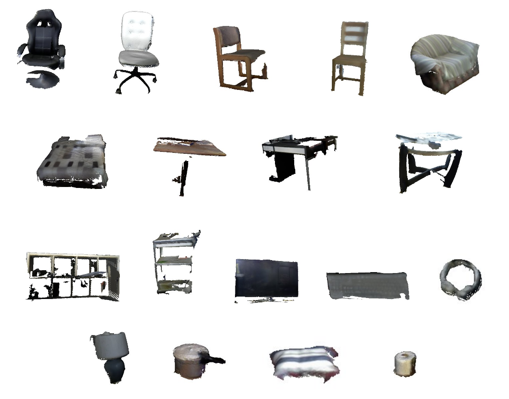

# Introduction The goal of this track is to study and evaluate the performance of 3D object retrieval algorithms using RGB-D data. This is inspired from the practical need to pair an object acquired from a consumer-grade depth camera to 3D CAD models available in public datasets on the Internet. Such pairing could be used for applications such as semantic annotation, shape completion, and scene synthesis. <br> # News **Mar 28, 2017**: The full track report document is available [here](./../pdf/objectnn_shrec17.pdf). **Feb 20, 2017**: [Evaluation results](evaluation/index.html) are now available. Thank you all for participating! **Feb 06, 2017**: An early version of the [evaluation code](https://github.com/scenenn/shrec17/tree/master/evaluation) is available. See the [submission format](#submission). **Jan 27, 2017**: Query and target dataset are ready! Please see the [full description](https://github.com/scenenn/shrec17). **Jan 16, 2017**: Welcome! <br> # Dataset The query dataset consists of more than 1500 objects extracted from more than 100 3D reconstructed real-world indoor scenes in the SceneNN dataset [[1]](#ref1). Each object will have: - a color mesh - a set of RGB-D images extracted from the scene that covers only the object - a mask of the object in each image - camera pose for each image Some example objects from our dataset are shown below:  The target dataset is a subset of ShapeNetSem [[2]](#ref2) that contains only models for indoor scenes. We adopt and modify the category definitions in NYU Depth Dataset V2 [[3]](#ref3) comprising more than 20 object classes such as table, chair, bookshelf, monitor, lamp, pillow, and so on. As there is not a standard way to measure the similarity of two shapes, especially for an RGB-D object and a CAD model pair, to establish the ground truth for evaluation, we will manually pair an RGB-D object in the query set to some CAD models in the target set. The classification done by human will be based on geometric and color similarity between the objects. Each ground truth pair will belong to a common object category and some subcategories. A subcategory considers more object attributes such as functionality or appearance. <br> # Evaluation For each query model, each participant submits a ranked list where retrieved models are sorted according to similarity with the query model. Each ranked list is evaluated based on the ground truth category and subcategories. We use the following measures: - Precision-Recall curve; F-Score; Mean Average Precision (MAP); - Normalized Discounted Cumulative Gain (NDCG); - Nearest Neighbor First-Tier (Tier1) and Second-Tier (Tier2). Evaluation code with example ranked lists is available [here](https://github.com/scenenn/shrec17/tree/master/evaluation). <br> <a name="submission"></a> ### Submission format By following the ShapeNet retrieval challenge, retrieval results for each query model should be saved to a simple text file. For example: File name: `snn.087_1845118.txt` (where `snn.087_1845118` is the query object ID) * Each line in the file has two values: `<objectID> <distance>` separated by a space character. The results are sorted with increasing distance (or decreasing similarity). The distance score is not used in evaluation, just for reference purposes. * The number of results per query model is capped at 1000. All result files should be packed into a zip file. To submit, please send a download link with an MD5 checksum of the zip file to the organizers at __scenenn[at]gmail.com__. <br> # Procedure 1. Each participant send an email to __scenenn[at]gmail.com__ for registration. 2. Each participant will submit a ranked list for each query model. For each query model, up to 5 ranked lists resulting from different algorithms or parameters can be submitted. 3. Each participant will also submit a one-page description of their method with up to two figures and discuss their results. 4. Automatic evaluations will be executed by the organizer. Results will be released to the participants. 5. The track results will be included in a joint paper to be submitted to the Eurographics Workshop on 3D Object Retrieval 2017. 6. If accepted, the joint paper will be presented at the Eurographics Workshop on 3D Object Retrieval 2017. <br> # Schedule *Jan 16, 2017:* Call for participation. *Jan 27, 2017:* Distribution of the query and target datasets. *Feb 01, 2017:* Registration deadline. *Feb 17, 2017:* Submit ranked lists and one-page description with at most two figures. *Feb 20, 2017:* Organizers perform automatic evaluations and release results. **Feb 28, 2017:** Submit track paper to SHREC for review. **Mar 07, 2017:** Reviews due. Notify authors of results. **Mar 17, 2017:** Submit camera-ready track papers for inclusion in the proceedings. **Apr 23-24, 2017:** Present at EUROGRAPHICS Workshop on 3D Object Retrieval 2017, including SHREC 2017. <br> # Organizers [Binh-Son Hua](http://sonhua.me), Singapore University of Technology and Design Quang-Hieu Pham, Singapore University of Technology and Design Minh-Khoi Tran, Singapore University of Technology and Design Quang-Trung Truong, Singapore University of Technology and Design <br> # Advisory Board [Lap-Fai (Craig) Yu](http://www.cs.umb.edu/~craigyu/), University of Massachusetts Boston [Duc Thanh Nguyen](http://ducthanhnguyen.weebly.com/), Deakin University [Sai-Kit Yeung](http://people.sutd.edu.sg/~saikit/), Singapore University of Technology and Design <br> # Contact If you have any questions, please email us at __scenenn[at]gmail.com__ <br> # Related Work As of January 2017, several 3D object retrieval challenges that use RGB-D query dataset had been organized. We summarized the relevant challenges in the following table: Track | Query Dataset | Target Dataset | Categories | Note --- | --- | --- | --- | --- NIST @ SHREC ‘15 [[4]](#ref4) | 60 RGB-D objects | 1200 CAD models | 60 | Geometry only DUTH @ SHREC ‘16 [[5]](#ref5) | 383 range-scan models | Similar to query dataset | 6 | Object from cultural heritage domain IUL @ SHREC ‘16 [[6]](#ref6) | 200 RGB-D objects | Similar to query dataset | N.A. | Objects scanned in lab setting Ours (as of Jan 27, 2017) | 1667 RGB-D objects from SceneNN | 3308 CAD models from ShapeNetSem | 20 categories | Objects in real-world environment As can be seen, our dataset more closely resembles a real-world setup where many objects are located in a scene and are captured in a single scene scan, generally resulting in objects being cluttered and only partially captured. This assumption poses more challenges to retrieval. Our query dataset also has a larger scale compared to previous datasets. <br> # References <span id='ref1'>[1]</span> SceneNN dataset, [http://scenenn.net] <span id='ref2'>[2]</span> ShapeNet dataset, [https://www.shapenet.org] <span id='ref3'>[3]</span> NYU Depth Dataset V2 dataset, [http://cs.nyu.edu/~silberman/datasets/nyu_depth_v2.html] <span id='ref4'>[4]</span> SHREC 2015: Range Scans based 3D Shape Retrieval, [http://www.itl.nist.gov/iad/vug/sharp/contest/2015/Range/] <span id='ref5'>[5]</span> SHREC 2016: Partial Shape Queries for 3D Object Retrieval, [https://vc.ee.duth.gr/shrec16/] <span id='ref6'>[6]</span> SHREC 2016: Shape Retrieval of Low-cost RGB-D Captures, [http://dataset.mldc.pt/dataset.html]